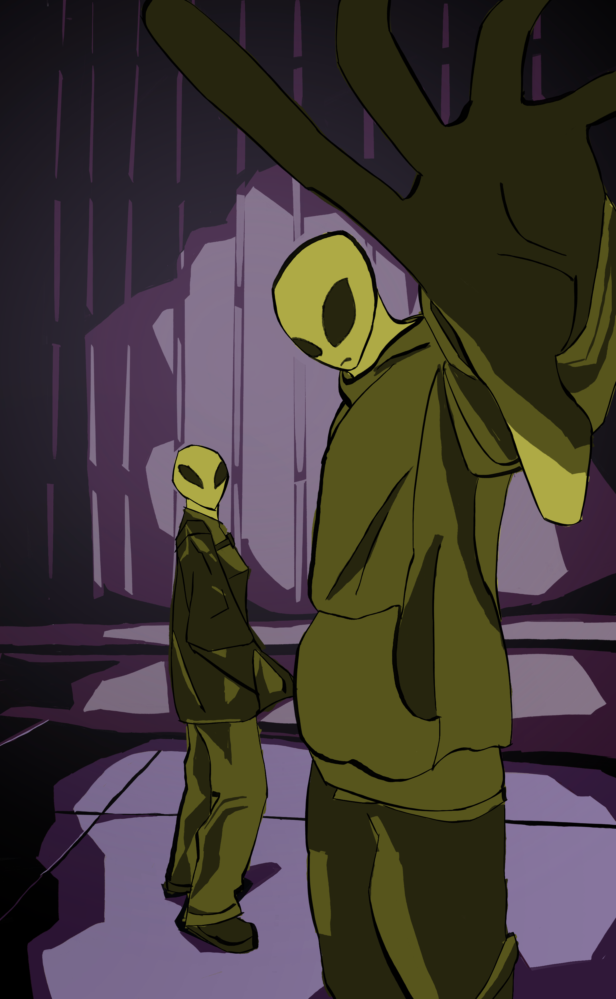
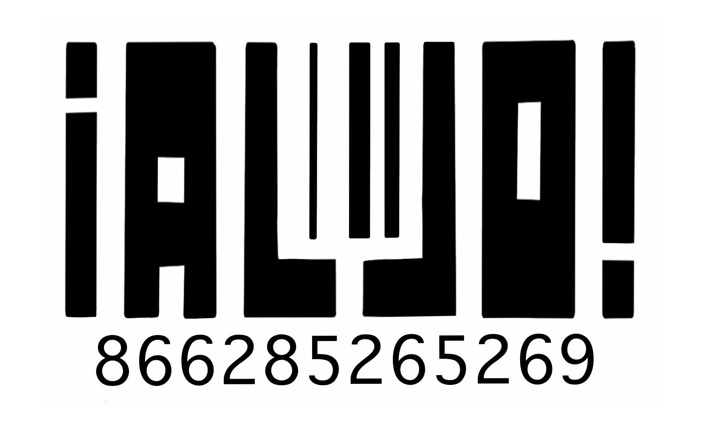

V E R M I N

[x]
=================================================== CASE_FILE: #873-A // "THE PROLOGUE” | TIME: 03:42 AM | SECTOR: LITTLE_VENUS WEATHER: HEAVY_RAIN // VISIBILITY: LOW ===================================================
Twenty years ago hundreds of meteors hit planet Earth in one of the largest space storm in human history. Only these weren’t meteors; they were escape pods from Venus.
Thousands of Venusians had fled their planet after all of its natural resources had dried up, leading to a massive famine that wiped out nearly half the population. Earth was not the target planet, but a slight miscalculation sent the entire population of Venus to a planet that was well established.
The highest concentration of escape pods landed in the United Republic. Most pods weren’t too big since many of the Venusian who fled were children. But the largest pod hit the Earth so hard that it left a crater roughly the size of TKTK (later becoming Venusian Lake after a series of tropical storm and political debates). I honestly think it’s an improvement, but I guess some people miss their city park.
I was actually on that meteor. I was around 5 years old when I landed, or at least that’s what they told me when we were rounded up and monitored by the city’s Sanitation Department. Our pod landed in New Marina City and the founders (dumbasses) didn’t have the foresight to expect such a huge influx of alien refugees. Instead, officials decided to keep us in these “Venusian Compounds” while they tried to figure out what to do.
Some people saw us as an immediate threat, others weren’t found of keeping beings that were so human-like in cages. Venusians were scattered all around the world which gave each city the freedom to react to us in whatever way they saw fit. Unfortunately for New Marina, they were stuck with the largest population for Venusian children. Fortunately for us, killing children is not cool here.
After 10 years of living like lab rats, city council finally came to an agreement: Venusians are to live freely in the absence of sun.
There were some exceptions to the rule. Some Venusians that were dubbed to have “exceptional abilities” could register with the city for some permit that let them roam the streets in the daylight. Medical emergencies are also seen with some grace in the eyes of the law. But the law can’t change the way humans react to you.
I was 15 when they passed the Sunset Liberation Act. Me, along with hundreds of other young Venusians were given the freedom to explore our new home. We were allowed to stay in The Compounds till we learned how to sustain ourselves. The city had paid for assimilation coaches to come in and teach us common language, basic math, and culture. I fucking hated being treated like an idiot, but luckily the program only lasted about 4 years.
Then we were free.
I remember my last sunset at The Compound. It was like a phoenix had died in the sky, consuming the daylight and creating constellations in its place. The lights from the city twinkled like the stars in the sky. That was the first time I thought New Marina City was beautiful. I watched the moon rise above the sky scrapers and basked in its light before heading out into the world.
One week later there was a massacre. Five humans were found dead in an alley near Little Venus. Certain body parts had been removed and replaced with Venusian limbs, all coming from three different Venusians. But reports didn’t focus the three Venusians that were dead. Just the five humans found mutilated like a child’s least favorite toy. The details of what happened are largely debated, but the proximity to Little Venus made us an easy target for the media. Soon enough, we became the city’s favorite boogie man again.
That’s when the Sanitation Department founded the Office of Alien Patrol & Exchange. With almost unanimous approval from city council members, APEX became stronger than any city peace officer or military unit within 100 miles of New Marina. At first I thought it was all performative. That the city needed to show its people that it was committed to protecting them. But then word got out that APEX was rounding Venusians up. One-by-one, Venusians that I once shared a home with started to disappear. And I wasn’t about to be one of them.
—
There’s this place called Nana’s Botanica on the west side of Little Venus. It sells tea and other herbal remedies late at night. I was feeling really sick one day and desperate for some medicine. I had overhead some people on their smoke break talking about Nana’s and figured it’d be the perfect place to dumpster dive. Not gonna lie, I’m a pretty sneaky guy. But I underestimated Nana’s hearing.
I was head first in the trash when she came out to offer me a cup of tea. I was convinced she’d turn tail and run the second she got one good look at me. Only to later find out that she’s blind (thank God).
We got to talking …
[Saved locally // Battery: 11%] ===================================================
contact
for all inquiries: substack.com/xalejo
# upon request
